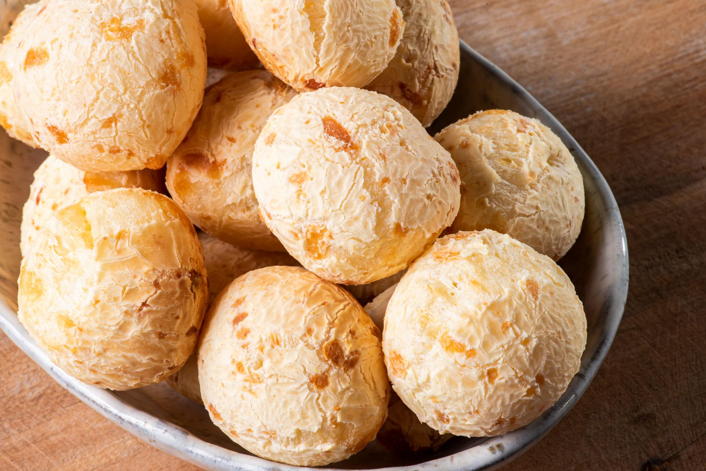
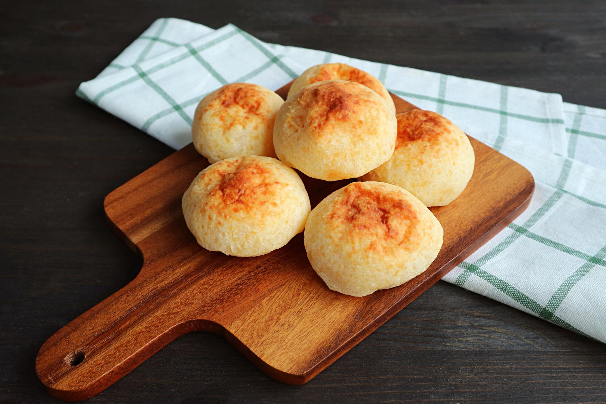
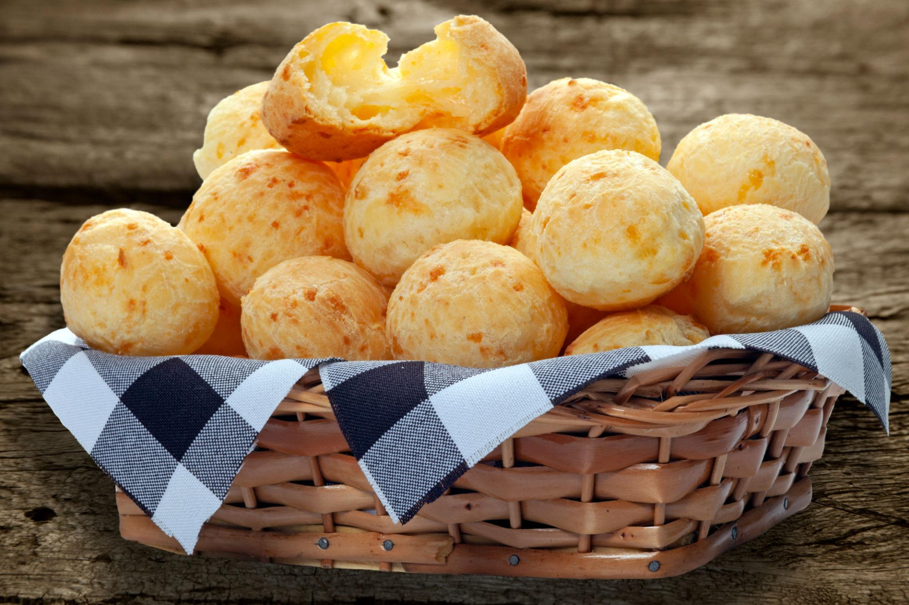

Description
Pão de Queijo is a traditional Brazilian cheese bread made with tapioca flour and cheese. It has a crispy outside and a soft, chewy inside. These small cheese rolls are naturally gluten-free and are very popular for breakfast or snacks in Brazil.
Ingredients
- 1 cup milk
- 1/2 cup vegetable oil
- 1 teaspoon salt
- 2 cups tapioca flour
- 2 eggs
- 1 cup grated Parmesan cheese
Steps
- Preheat the oven to 400°F (200°C).
- Heat the milk, oil, and salt in a saucepan.
- Pour the hot mixture over the tapioca flour and mix well.
- Add the eggs and cheese.
- Mix until a smooth dough forms.
- Roll the dough into small balls.
- Bake for 20 minutes or until golden.